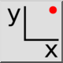
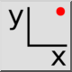
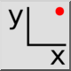
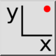

Współrzędna
Pasek narzędziowy / ikona:
 

Menu: Przyciąganie > Współrzędna
Skrót: S, X
Polecenia: snapcoordinate | sx
Jest to tłumaczenie automatyczne.
Pasek narzędziowy / ikona:
 

Menu: Przyciąganie > Współrzędna
Skrót: S, X
Polecenia: snapcoordinate | sx
Określa punkt poprzez wprowadzenie współrzędnej bezwzględnej lub względnej współrzędnej kartezjańskiej.